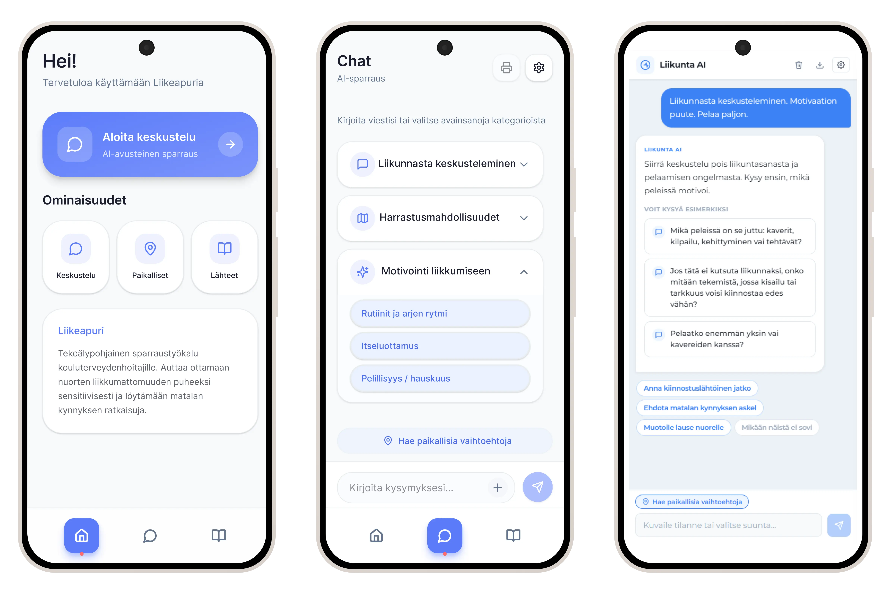
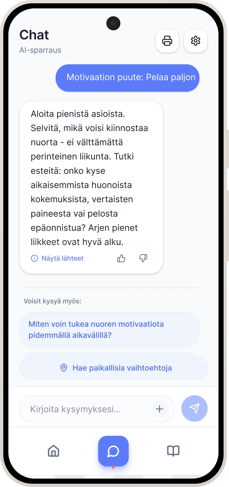
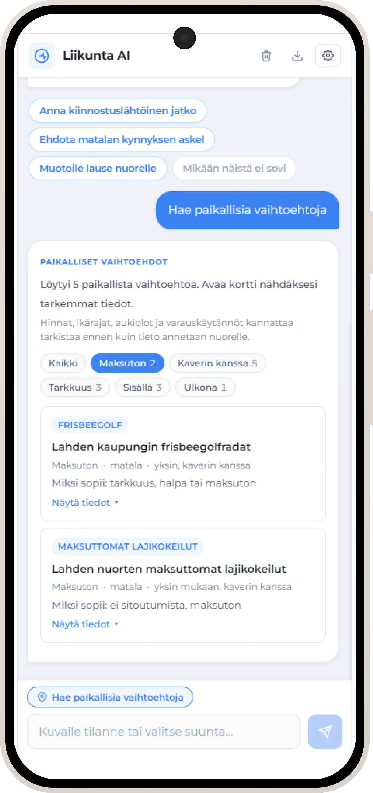
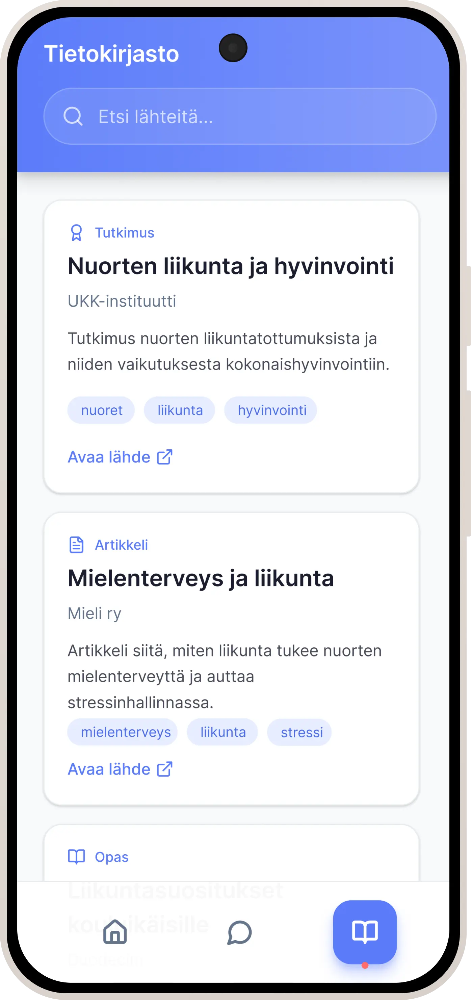
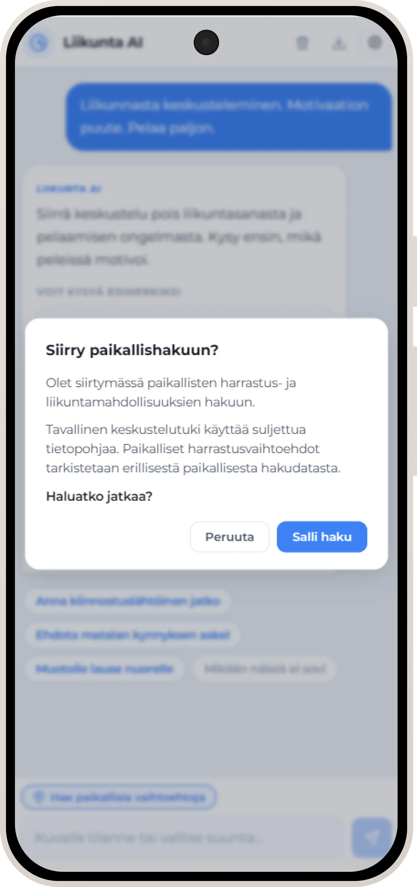
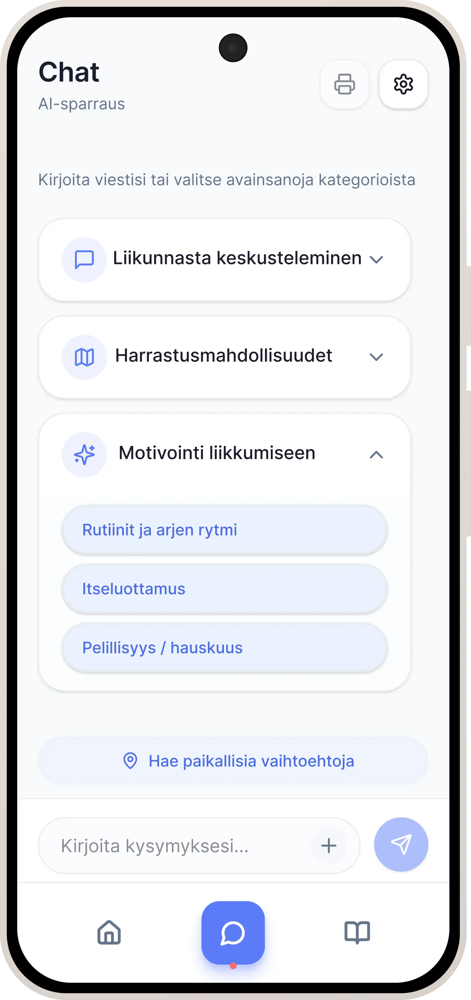
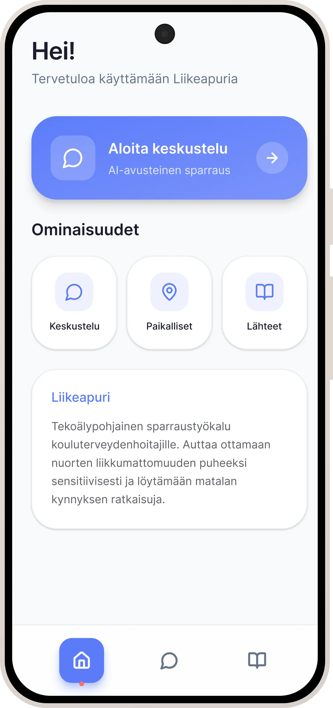

Liikeapuri
Sensitive physical activity conversations supported by an AI sparring tool for school nurses. A real client project with PHLU. Sensitiivisen liikuntakeskustelun tukeminen AI-avusteisella sparraustyökalulla kouluterveydenhoitajille. Oikea asiakastoimeksianto PHLU:lle.
ProblemOngelma
School nurses encounter inactive youth regularly but lack a structured tool for sensitive physical activity conversations. Local activity information is scattered. Kouluterveydenhoitajat kohtaavat vähän liikkuvia nuoria säännöllisesti, mutta heillä ei ole yhtenäistä työkalua liikunnan sensitiiviseen puheeksiottoon. Paikallinen harrastustieto on hajallaan.
GoalTavoite
Prototype an AI-assisted tool that supports healthcare professionals in starting sensitive conversations about physical activity and finding local options. Prototypoida AI-avusteinen työkalu, joka tukee terveydenhuollon ammattilaisia sensitiivisen liikuntakeskustelun aloittamisessa ja paikallisten vaihtoehtojen löytämisessä.
My RoleRoolini
Product/concept definition, AI role specification, PRD documentation, and building the functional React AI prototype. Konseptin ja AI:n roolin määrittely, PRD-dokumentointi ja toimivan React AI -prototyypin rakentaminen.
OutcomeLopputulos
Figma hi-fi prototype, functional AI prototype (React + Vite + Mistral API), PRD, and UX report. Figma hi-fi -prototyyppi, toimiva AI-prototyyppi (React + Vite + Mistral API), PRD ja UX-raportti.
Table of ContentsSisällysluettelo
- OverviewYleiskatsaus
- Three strongest proofsKolme vahvinta näyttöä
- Problem and ContextOngelma ja konteksti
- My RoleRoolini
- Research and InsightsTutkimus ja havainnot
- Solution OptionsRatkaisuvaihtoehdot
- The SolutionRatkaisu
- Technology and ethicsTeknologia ja etiikka
- Key Design DecisionsKeskeiset design-päätökset
- Validation and LimitationsValidointi ja rajoitteet
- ReflectionReflektio
- CreditsTekijät
OverviewYleiskatsaus
Liikeapuri is an AI-assisted sparring tool for school nurses and other professionals working with young people. It helps bring up physical activity sensitively, suggests context-appropriate follow-up questions, and provides a separate local search for finding concrete activity options.
The tool does not make decisions on behalf of the professional. AI acts as a background sparring partner, and the professional always evaluates how to use suggestions in the consultation.
Liikeapuri on AI-avusteinen sparraustyökalu kouluterveydenhoitajille ja muille nuorten kanssa työskenteleville ammattilaisille. Se auttaa ottamaan liikunnan puheeksi sensitiivisesti, ehdottaa tilanteeseen sopivia jatkokysymyksiä ja tarjoaa erillisen paikallishaun konkreettisten harrastusvaihtoehtojen löytämiseen.
Työkalu ei tee päätöksiä ammattilaisen puolesta. AI toimii taustasparraajana, ja ammattilainen arvioi aina, miten ehdotuksia käytetään vastaanottotilanteessa.

Three strongest proofsKolme vahvinta näyttöä
1. Traceable product definition for an AI solution
I created the product requirements document and the prototype design specification. They made product goals, scope, risks, accessibility requirements and feature rationale visible. Each prototype feature had to answer four questions: what it does, why it exists, how it helps the user and what requirements it must meet.
The definition also included a WCAG AA target, contrast and font size considerations, and a clear interface suitable for consultation situations. This gave further development a clearer starting point than a Figma prototype alone.
2. Functional AI prototype that made risks visible
I built a published AI prototype with React, Vite and Mistral API. The React app was not meant to finalize the UI or UX solution. Its purpose was to test AI logic, conversation paths and response risks.
The prototype can be tested with your own Mistral or GPT-compatible API key through the Settings view at liikunta-ai.vercel.app. Claude Code helped produce code, but I directed the implementation, integration and bug fixes.
Testing revealed wrong assumptions, question loops and risks in local search. These findings were turned into PRD requirements.
3. Lightweight agent logic and limited knowledge base for AI risk management
I built logic where the app identifies the user's situation before calling the language model. Different use cases receive different instructions.
In local search, the language model is not used at all. Results come from limited, curated test data instead of free generation. This made the solution more predictable and documented clear safety layers for further development.
1. Jäljitettävä tuotemäärittely AI-ratkaisulle
Loin tuotevaatimusdokumentin ja prototyypin designmäärittelyn. Ne tekivät tuotteen tavoitteet, rajaukset, riskit, saavutettavuusvaatimukset ja ominaisuusperustelut näkyviksi. Jokaisen prototyypin ominaisuuden piti vastata neljään kysymykseen: mitä se tekee, miksi se on olemassa, miten se auttaa käyttäjää ja mitä vaatimuksia sen pitää täyttää.
Määrittelyyn sisältyi WCAG AA -tavoite, kontrasti- ja kirjasinkokoharkintoja sekä vastaanottotilanteeseen sopiva selkeä käyttöliittymä. Tämä antoi jatkokehitykselle selkeämmän lähtökohdan kuin pelkkä Figma-prototyyppi.
2. Toimiva AI-prototyyppi, joka teki riskit näkyviksi
Rakensin julkaistun AI-prototyypin React-, Vite- ja Mistral API -teknologioilla. React-sovellus ei ollut tarkoitettu UI- tai UX-ratkaisun viimeistelyyn. Sen tarkoituksena oli testata AI-logiikkaa, keskustelupolkuja ja vastauksiin liittyviä riskejä.
Prototyyppiä voi testata omalla Mistral- tai GPT-yhteensopivalla API-avaimella Asetukset-näkymän kautta osoitteessa liikunta-ai.vercel.app. Claude Code auttoi koodin tuottamisessa, mutta ohjasin toteutusta, integraatiota ja bugien korjauksia.
Testaus paljasti virheelliset oletukset, toistuvat kysymyskierrokset ja paikallishaun riskit. Nämä havainnot muutettiin PRD-vaatimuksiksi.
3. Kevyt agenttilogiikka ja rajattu tietopohja AI-riskien hallintaan
Rakensin logiikan, jossa sovellus tunnistaa käyttäjän tilanteen ennen kielimallin kutsumista. Eri käyttötapaukset saavat eri ohjeistuksen.
Paikallishaussa kielimallia ei käytetä lainkaan. Tulokset tulevat rajatusta, kuratoidusta testidatasta vapaan generoinnin sijaan. Tämä teki ratkaisusta ennustettavamman ja dokumentoi selkeät turvallisuuskerrokset jatkokehitystä varten.
Problem and ContextOngelma ja konteksti
School nurses regularly meet young people who are physically inactive, but they lack a unified tool to support bringing up physical activity. Consultation time is limited, local information about activity options is scattered, and the underlying reasons for a young person's situation may involve complex psychological, social, or experiential barriers.
Based on interviews, the more critical challenge was often starting and continuing the conversation sensitively. A young person may not be ready for a sport yet, but needs a small, safe, and realistic step forward first.
Problem statement: A school nurse needs quick access to sensitive conversation support and local options, because information is scattered and a young person's situation can be complex, making it hard to bring up physical activity and provide follow-up guidance during a consultation.
The project goal was to deliver a concrete demo to the client (Päijät-Häme Sports and Recreation Association, PHLU) that could be presented to stakeholders and moved toward further development.
Kouluterveydenhoitajat kohtaavat vähän liikkuvia nuoria säännöllisesti, mutta heillä ei ole yhtenäistä työkalua liikunnan puheeksioton tueksi. Vastaanottoaika on rajallinen, paikallinen tieto harrastusmahdollisuuksista on hajallaan ja nuoren tilanteen taustalla voi olla monisyisiä psyykkisiä, sosiaalisia tai kokemuksellisia esteitä.
Haastattelujen perusteella kriittisempi kohta oli usein keskustelun käynnistäminen ja jatkaminen sensitiivisesti. Nuori ei välttämättä ole valmis harrastukseen, vaan tarvitsee ensin pienen, turvallisen ja realistisen etenemisaskeleen.
Problem statement: Kouluterveydenhoitaja tarvitsee nopeasti sensitiivistä keskustelutukea ja paikallisia vaihtoehtoja, koska tieto on hajallaan ja nuoren tilanne voi olla monisyinen. Tämä vaikeuttaa liikunnan puheeksiottoa ja jatko-ohjausta vastaanoton aikana.
Projektin tavoitteena oli tuottaa toimeksiantajalle (Päijät-Hämeen Liikunta ja Urheilu ry, PHLU) konkreettinen demo, jolla ideaa voidaan esitellä sidosryhmille ja viedä kohti jatkokehitystä.
My RoleRoolini
I was responsible for concept and AI role definition, PRD documentation, and building the functional AI prototype. The project was done in a multi-role team where my focus was on product/concept, AI specification, and requirements work.
Specifically responsible for
- Structuring product goals, constraints, and risks into the PRD
- Defining AI's role as a background sparring partner, not a decision-maker
- Building a functional AI prototype on React + Vite + Mistral API stack
- Separating local search and conversation support into distinct features
- Writing the prototype design specification, where features were justified before building
Concrete contribution
I participated in client kickoff interviews and ideation workshop facilitation. Every error found in AI prototype testing was converted into either a new prompt rule, code safeguard, search logic restriction, or PRD requirement.
- AI made overly broad assumptions from quick selections, which led to the requirement that quick selection alone does not activate background assumptions.
- AI got stuck in repeated question loops when the user asked for a concrete answer, which led to the rule to move to the next usable step.
- Local search was risky as freely generated text, which resulted in the requirement for a separate local search with card view.
What I did not do
I was not responsible for the visual design of the Figma UI or writing the UX report. The Figma hi-fi prototype was handled by the team's UI/prototyping role, and the UX report by the team's UX/research roles.
Vastasin erityisesti konseptin ja AI:n roolin määrittelystä, PRD-dokumentoinnista ja toimivan AI-prototyypin rakentamisesta. Projekti tehtiin moniosaajatiimissä, jossa oma roolini painottui product/concept-, AI- ja vaatimusmäärittelytyöhön.
Vastasin erityisesti
- Tuotteen tavoitteiden, rajausten ja riskien jäsentämisestä PRD:hen
- AI:n roolin määrittelystä taustasparraajaksi, ei päätöksentekijäksi
- Toimivan AI-prototyypin rakentamisesta React + Vite + Mistral API -pinolla
- Paikallishaun ja keskustelutuen erottamisesta erillisiksi toiminnoiksi
- Prototyypin designmäärittelystä, jossa ominaisuudet perusteltiin ennen rakentamista
Konkreettinen panos
Osallistuin toimeksiantajan aloitushaastatteluihin ja ideointityöpajan fasilitointiin. Jokainen testauksessa havaittu virhe muutettiin joko uudeksi prompttisäännöksi, koodisuojaukseksi, hakulogiikan rajaukseksi tai PRD-vaatimukseksi.
- AI teki liian pitkälle meneviä oletuksia pikavalinnan perusteella, mikä johti vaatimukseen, ettei pikavalinta yksin aktivoi taustaoletuksia.
- AI jäi toistuvaan kysymyskierrokseen, vaikka käyttäjä pyysi konkreettista vastausta, mikä johti sääntöön siirtyä seuraavaan käyttökelpoiseen askeleeseen.
- Paikallishaku oli riskialtis vapaasti generoituna tekstinä, mikä johti vaatimukseen erillisestä paikallishausta ja korttinäkymästä.
Rajaus
En vastannut Figma-UI:n visuaalisesta suunnittelusta tai UX-raportin kirjoittamisesta. Figma hi-fi -prototyypistä vastasi tiimin UI/prototypointirooli, ja UX-raportista vastasivat tiimin UX/research-roolit.
Research and InsightsTutkimus ja havainnot
The project used semi-structured expert interviews, a Webropol survey for nurses, heuristic evaluation, and a synthetic persona based on interview data.
- Expert interviews: 5
- Webropol survey to nurses: n=24
- Heuristic evaluation
- Synthetic persona based on user data
Key Findings
1. The core barrier is not lack of information, but getting started.
Many young people are not immediately ready for a sport. The solution's focus could not be just a list of activities.
Impact: Conversation support and low-threshold next steps were raised as core features.
2. Handling sensitive topics requires sensitive support.
Body shame, mental health, previous bad experiences, and bullying can make physical activity a sensitive subject.
Impact: AI was limited to a professional sparring partner with rules for tone and avoiding assumptions.
3. Local activity information is scattered and hard to use during a consultation.
81% of survey respondents wanted information about free or affordable options, and 71% wanted concrete motivational tips.
Impact: Local search was separated as its own feature with limited card results, not free chat.
Projektissa hyödynnettiin puolistrukturoituja asiantuntijahaastatteluja, Webropol-kyselyä terveydenhoitajille, heuristista arviointia sekä synteettistä persoonaa käyttäjäaineiston pohjalta.
- Asiantuntijahaastattelut: 5 kpl
- Webropol-kysely terveydenhoitajille: n=24
- Heuristinen arviointi
- Synteettinen persoona käyttäjäaineiston pohjalta
Keskeiset löydökset
1. Liikkumattomuuden ydineste ei ole vain tiedon puute, vaan toiminnan käynnistäminen.
Moni nuori ei ole heti valmis harrastukseen. Ratkaisun painopiste ei voinut olla pelkkä harrastuslista.
Vaikutus: Keskustelutuki ja matalan kynnyksen etenemisehdotukset nostettiin keskeisiksi toiminnoiksi.
2. Arkojen aiheiden käsittely vaatii sensitiivistä tukea.
Kehohäpeä, mielenterveys, aiemmat huonot kokemukset ja kiusaaminen voivat tehdä liikunnasta herkän aiheen.
Vaikutus: AI rajattiin ammattilaisen sparraajaksi, ja vastauksille määriteltiin sävyyn ja oletusten välttämiseen liittyviä sääntöjä.
3. Paikallinen harrastustieto on hajallaan ja vaikeasti käytettävää vastaanoton aikana.
81 % vastaajista kaipasi tietoa ilmaisista tai edullisista vaihtoehdoista ja 71 % konkreettisia motivointivinkkejä.
Vaikutus: Paikallishaku erotettiin omaksi toiminnokseen, jossa tulokset esitetään rajattuina kortteina.


Solution OptionsRatkaisuvaihtoehdot
In the early stage, the solution was not a single UI view but several possible directions. We compared options based on which would solve both the conversation initiation problem and the need for concrete next steps. Alkuvaiheessa ratkaisu ei ollut yksittäinen käyttöliittymänäkymä, vaan useita mahdollisia suuntia. Vertailimme vaihtoehtoja sen perusteella, mikä ratkaisisi sekä puheeksioton ongelman että konkreettisten jatkoaskelten tarpeen.
Option AVaihtoehto A
Activity listHarrastuslista
Finding local optionsPaikallisten vaihtoehtojen löytäminen
Easy to understand and scopeHelppo ymmärtää ja rajata
Does not support sensitive conversationEi tue sensitiivistä puheeksiottoa
Not sufficient aloneEi yksin riittävä
Option BVaihtoehto B
AI conversation supportAI-keskustelutuki
Conversation initiation and follow-up question supportPuheeksioton ja jatkokysymysten tuki
Addresses sensitive consultation situationsVastaa arkaan kohtaamistilanteeseen
Leaves concrete options to the professionalJättää konkreettiset vaihtoehdot ammattilaisen varaan
Needed as part of solutionTarvitaan osaksi ratkaisua
Option CVaihtoehto C
Conversation support + separate local searchKeskustelutuki + erillinen paikallishaku
Conversation initiation and concrete next stepsPuheeksiotto ja konkreettinen eteneminen
Combines consultation support and practical optionsYhdistää kohtaamisen tuen ja käytännön vaihtoehdot
Requires clear boundary between AI and searchVaatii selkeän rajan AI:n ja haun välille
Chosen solutionValittu ratkaisu
The key trade-off was that local search was implemented in the pilot with limited test data. This does not solve production-level data maintenance, but made the search structure, filters, and risks testable within the project timeline. Keskeinen kompromissi oli se, että paikallishaku toteutettiin pilotissa rajatulla testidatalla. Tämä ei ratkaise tuotantotason tiedon ylläpitoa, mutta se teki hakutulosten rakenteen, suodattimet ja riskit testattaviksi projektin aikataulussa.
The SolutionRatkaisu
The final solution was an AI-assisted sparring tool that supports the professional in sensitive physical activity conversations and provides local activity search as a separate, limited feature. The solution has three parts:
- Sensitive conversation support: AI suggests opening phrases, follow-up questions, and small next steps. It does not diagnose or decide for the professional. The model supports short, situation-specific openings and small next steps. It does not give a complete solution on behalf of the young person.
- Separate local search: Local options are fetched from limited test data and shown as cards. The model cannot invent non-existent places.
- Visibility of sources and boundaries: The user can see when information is based on sources, a limited knowledge base, or local search data.
Lopullinen ratkaisu oli AI-avusteinen sparraustyökalu, joka tukee ammattilaista sensitiivisessä liikuntakeskustelussa ja tarjoaa paikallisen harrastushaun omana, rajattuna toimintona. Ratkaisun ydin oli kolmeosainen:
- Sensitiivinen keskustelutuki: AI ehdottaa avausfraaseja, jatkokysymyksiä ja pieniä etenemisaskeleita. Se ei tee diagnoosia eikä päätä ammattilaisen puolesta. Malli tukee lyhyitä, tilanteeseen sopivia avauksia ja pieniä seuraavia askeleita. Se ei anna valmista ratkaisua nuoren puolesta.
- Erillinen paikallishaku: Paikalliset vaihtoehdot haetaan rajatusta testidatasta ja näytetään kortteina. Malli ei saa keksiä olemattomia paikkoja.
- Lähteiden ja rajojen näkyvyys: Käyttäjälle tehdään näkyväksi, milloin tieto perustuu lähteisiin, rajattuun tietopohjaan tai paikalliseen hakudataan.
Visual highlight 1: Sensitive conversation supportVisuaalinen nosto 1: Sensitiivinen keskustelutuki

Visual highlight 2: Local searchVisuaalinen nosto 2: Paikallishaku

Technical solution: guided AI, not free generationTekninen ratkaisu: ohjattu AI eikä vapaa generointi
In a sensitive healthcare context, AI cannot be allowed to respond freely. I built lightweight agent logic into the prototype: the application first interprets the user's situation, selects the correct response mode, and gives the language model only the instructions appropriate to that situation.
The logic worked like this:
- User writes a message or selects a quick option.
- App identifies whether it's a motivation conversation, activity mapping, or local search request.
- App assembles situation-appropriate instructions for the language model.
- Code performs additional checks before the model call to prevent disconnected or sensitive assumptions.
- In local search, the language model is not called at all. Results are fetched from limited test data.
Terveydenhuollon kaltaisessa sensitiivisessä kontekstissa AI:n ei voi antaa vastata täysin vapaasti. Rakensin prototyyppiin kevyen agenttilogiikan: sovellus tulkitsee ensin käyttäjän tilanteen, valitsee oikean vastausmoodin ja antaa kielimallille vain kyseiseen tilanteeseen sopivan ohjeistuksen.
Logiikka toimi näin:
- Käyttäjä kirjoitti viestin tai valitsi pikavalinnan.
- Sovellus tunnisti, oliko kyse motivointikeskustelusta, harrastuskartoituksesta vai paikallishakupyynnöstä.
- Sovellus kokosi kielimallille tilanteeseen sopivan ohjeistuksen.
- Koodissa tehtiin ennen mallikutsua lisätarkistuksia, jotta malli ei tehnyt irrallisia tai liian arkaluonteisia oletuksia.
- Paikallishaussa kielimallia ei kutsuttu lainkaan, vaan tulokset haettiin rajatusta testidatasta.
Visual highlight 3: Sources and reliabilityVisuaalinen nosto 3: Lähteet ja luotettavuus

Visual highlight 4: Transition to local searchVisuaalinen nosto 4: Siirtyminen paikallishakuun

Technology choice and ethical principlesTeknologiavalinta ja eettiset periaatteet
We chose Mistral as the language model for the prototype because the context was sensitive and healthcare-like. The choice emphasized a European operating environment, GDPR compatibility, cost-effective API use and the ability to test AI logic lightly before a heavier production architecture.
Ethics was part of the product definition, not a separate add-on. In the PRD, AI was defined as a background sparring partner, not a decision-maker, doctor or therapist.
The design used Sitra's fair data economy principles, especially human-centeredness, transparency and avoiding harm. The work also reflected the client's responsibility goals: equality, respect for diversity, a safe environment, good governance and environmental responsibility.
Green Lahti and Luontoaskel terveyteen thinking supported the focus on local activity, active transportation and more sustainable physical activity options.
In practice, this was visible in four decisions:
- Local search was separated from free AI generation.
- Source visibility was written into the requirements.
- The professional kept final responsibility.
- Further development included the principle of technological sufficiency: use the smallest sufficient model and avoid unnecessary API calls.
Valitsimme prototyypin kielimalliksi Mistralin, koska konteksti oli sensitiivinen ja terveydenhuollon kaltainen. Valinnassa korostui eurooppalainen toimintaympäristö, GDPR-yhteensopivuus, kustannustehokas API-käyttö ja mahdollisuus testata AI-logiikkaa kevyesti ennen raskaampaa tuotantoarkkitehtuuria.
Etiikka oli osa tuotemäärittelyä, ei erillinen lisäys. PRD:ssä AI määriteltiin taustasparraajaksi, ei päätöksentekijäksi, lääkäriksi tai terapeutiksi.
Suunnittelussa hyödynnettiin Sitran reilun datatalouden periaatteita, erityisesti ihmislähtöisyyttä, läpinäkyvyyttä ja haitan välttämistä. Työ heijasteli myös toimeksiantajan vastuullisuustavoitteita: tasa-arvo, moninaisuuden kunnioittaminen, turvallinen ympäristö, hyvä hallintotapa ja ympäristövastuu.
Green Lahti ja Luontoaskel terveyteen -ajattelu tuki suuntautumista lähiliikuntaan, aktiiviseen liikkumiseen ja kestävämpiin liikuntavaihtoehtoihin.
Käytännössä tämä näkyi neljässä päätöksessä:
- Paikallishaku erotettiin vapaasta AI-generoinnista.
- Lähteiden näkyvyys kirjoitettiin vaatimuksiin.
- Ammattilaisella säilyi loppuvastuu.
- Jatkokehitykseen sisällytettiin teknologisen riittävyyden periaate: käytä pienintä riittävää mallia ja vältä tarpeettomia API-kutsuja.
Key Design DecisionsKeskeiset design-päätökset
AI's roleAI:n rooli
- AlternativesVaihtoehdot
- Expert, decision-maker or sparring partnerAsiantuntija, päätöksentekijä tai sparraaja
- Final choiceLopullinen päätös
- Sparring partnerSparraaja
- RationalePerustelu
- The professional makes decisions. Healthcare context requires keeping responsibility with the human.Ammattilainen tekee päätökset. Terveydenhuollon konteksti vaatii vastuun säilyttämistä ihmisellä.
Local searchPaikallishaku
- AlternativesVaihtoehdot
- Free chat generation or limited search logicVapaa chat-generointi tai rajattu hakulogiikka
- Final choiceLopullinen päätös
- Separate local search with limited dataErillinen paikallishaku rajatulla datalla
- RationalePerustelu
- Reduces risk of incorrect or nonexistent local suggestions.Vähentää virheellisten tai olemattomien paikallisten ehdotusten riskiä.
Prototyping focusPrototypoinnin painopiste
- AlternativesVaihtoehdot
- Wizard of Oz testing or functional AI prototypeWizard of Oz -testaus tai toimiva AI-prototyyppi
- Final choiceLopullinen päätös
- Functional AI prototypeToimiva AI-prototyyppi
- RationalePerustelu
- Wizard of Oz testing was ruled out because enough real test users could not be recruited. A functional prototype still made model behavior and risks visible.Wizard of Oz -testaus rajautui pois, koska oikeita testikäyttäjiä ei saatu riittävästi. Toimiva proto teki mallin käyttäytymisen ja riskit näkyviksi.
Response guidanceVastausten ohjaus
- AlternativesVaihtoehdot
- One general prompt or situation-specific rulesYksi yleinen prompti tai tilanteen mukaan vaihtuvat säännöt
- Final choiceLopullinen päätös
- Mode-specific guidance and code safeguardsMoodikohtainen ohjaus ja koodisuojaukset
- RationalePerustelu
- Sensitive conversation and local search cannot operate on the same ruleset.Sensitiivinen keskustelu ja paikallishaku eivät voi toimia samalla säännöstöllä.
Structured chat startStrukturoitu chat-aloitus

Front pageEtusivu

Validation and LimitationsValidointi ja rajoitteet
The project produced a Figma hi-fi prototype, functional AI prototype, product requirements document, and UX report. The AI prototype made visible how the language model behaves in sensitive scenarios and where application logic must restrict or guide responses.
Note: The project did not have post-launch analytics or sufficient user testing to verify measured impact. Impact is expected and qualitatively supported, not measured.
Wizard of Oz testing and wider user testing remained incomplete because enough real test users could not be recruited within the project timeline. This should have been treated as a critical project risk from the start.
Limitations and blind spots
- It is not yet known whether the professional has time to use the tool during a real consultation. Testing in realistic situations is still needed.
- AI responses have not been validated as safe by actual nurses. Scenario testing with professionals in realistic consultation-like situations remains the next required step.
- Local data maintenance has no tested model yet. The data used in the pilot ages quickly and requires a governance plan for further development.
Next sensible test
5 to 10 school nurses testing in realistic consultation-like situations, measuring: self-assessed confidence before and after, task completion, sensitivity of response tone, relevance of local search, and speed of use.
Projektin lopputuloksena syntyi Figma hi-fi -prototyyppi, toimiva AI-prototyyppi, tuotevaatimusdokumentti ja UX-raportti. AI-prototyyppi teki näkyväksi, miten kielimalli käyttäytyy sensitiivisissä skenaarioissa ja missä kohdissa sovelluslogiikan pitää rajoittaa tai ohjata vastausta.
Huomio: Projektissa ei ollut käytettävissä julkaisun jälkeistä analytiikkaa eikä riittävää käyttäjätestausta mitatun vaikutuksen todentamiseen. Vaikutus on odotettua ja laadullisesti perusteltua, ei mitattua.
Wizard of Oz -testaus ja laajempi käyttäjätestaus jäivät kesken, koska oikeita testikäyttäjiä ei saatu riittävästi projektin aikataulussa. Tämä olisi pitänyt tunnistaa projektin alusta asti kriittisenä riskinä.
Rajoitteet ja sokeat pisteet
- Ei vielä tiedetä, ehtikö ammattilainen käyttää työkalua todellisen vastaanoton aikana. Testaus realistisissa tilanteissa puuttuu.
- AI-vastausten turvallisuutta ei ole vahvistettu oikeilla terveydenhoitajilla. Skenaariotestaus ammattilaisten kanssa realistisissa vastaanoton kaltaisissa tilanteissa on seuraava vaadittava askel.
- Paikallisen tiedon ylläpidolle ei ole testattua mallia. Pilotissa käytetty data vanhenee nopeasti ja vaatii hallintamallin jatkokehityksessä.
Seuraava järkevä testi
5–10 kouluterveydenhoitajan testaus realistisissa vastaanoton kaltaisissa tilanteissa, mittaukset: itsearvioitu varmuus ennen ja jälkeen, tehtävän onnistuminen, vastausten sävyn sensitiivisyys, paikallishaun relevanssi ja käytön nopeus.
ReflectionReflektio
What worked
I succeeded in helping structure a broad problem space into a clear and testable concept. I used the AI prototype as a definition tool: a bad AI response was a signal about what needed to be restricted, guided, or documented for the next development phase.
What I learned
- AI experience is not born from a single good prompt, but from the combination of UI, data, application logic, prompts, and safety restrictions.
- A prototype can also be a requirements definition tool: it makes risks, assumptions, and missing rules visible before production development.
- In sensitive contexts, the most important design decision may be what AI is not allowed to do.
- In a product/concept role, value often comes from turning a broad problem space into a scoped, justified, and testable direction.
What remained uncertain
Whether the tool actually fits into a real consultation situation remained untested. The local data maintenance question also stayed unresolved: who would update the data, how often, and who owns it in production. These are the two most important open questions for the next phase.
What I would do differently
- Treat test user recruitment as a critical project risk from kickoff. Not just a task to complete later.
- Have a validation backup plan ready: if real nurses are unavailable, have a Wizard of Oz scenario prepared in advance.
- Scope the pilot tighter. One or two core flows tested well beats many features tested superficially.
What's next
I'm continuing Liikeapuri's development with Fanny Marjakangas as a thesis project for the client. The primary target group is school nurses, with youth workers as a secondary group. The goal is a testable prototype, not a production-ready system. The thesis will focus on validating the prototype's usability in real professional contexts and producing user-testing-based recommendations for further development.
Mikä onnistui?
Onnistuin siinä, että autoin jäsentämään laajan ongelmakentän tiimille selkeäksi ja testattavaksi konseptiksi. Käytin AI-prototyyppiä määrittelyn työkaluna: huono AI-vastaus ei ollut vain virhe, vaan signaali siitä, mitä pitää rajata, ohjata tai dokumentoida seuraavaa kehitysvaihetta varten.
Mitä opin?
- AI-kokemus ei synny yhdestä hyvästä promptista, vaan käyttöliittymän, datan, sovelluslogiikan, promptien ja turvallisuusrajausten yhdistelmästä.
- Prototyyppi voi olla myös vaatimusmäärittelyn työkalu: se tekee riskit, oletukset ja puuttuvat säännöt näkyviksi ennen tuotantokehitystä.
- Sensitiivisessä kontekstissa tärkein design-päätös voi olla se, mitä AI ei saa tehdä.
- Product/concept-roolissa arvo syntyy usein siitä, että laaja ongelmakenttä muutetaan rajatuksi, perustelluksi ja testattavaksi suunnaksi.
Mikä jäi epävarmaksi?
Se, sopiiko työkalu oikeasti todelliseen vastaanottotilanteeseen, jäi testaamatta. Paikallisen tiedon ylläpitokysymys jäi myös avoimeksi: kuka päivittäisi tietoja, kuinka usein ja kuka omistaa ne tuotannossa. Nämä ovat kaksi tärkeintä avointa kysymystä seuraavaa vaihetta varten.
Mitä tekisin toisin?
- Käsittelisin testikäyttäjien rekrytointia kriittisenä projektiriskinä alusta asti. Ei vain myöhemmin hoidettavana tehtävänä.
- Varautuminen validoinnin varasuunnitelmalla: jos oikeita terveydenhoitajia ei ole saatavilla, Wizard of Oz -skenaario valmiina etukäteen.
- Rajaisin pilotin tiukemmin. Yksi tai kaksi hyvin testattua ydinpolkua on parempi kuin monta pinnallisesti testattua toimintoa.
Mitä seuraavaksi?
Jatkan Liikeapurin kehittämistä Fanny Marjakankaan kanssa opinnäytetyönä toimeksiantajalle. Ensisijainen kohderyhmä on kouluterveydenhoitajat, toissijaisena nuorisotyöntekijät. Tavoitteena on testattava prototyyppi, ei tuotantovalmis järjestelmä. Opinnäytetyö keskittyy prototyypin käyttökelpoisuuden validointiin ammattilaisten todellisissa konteksteissa ja käyttäjätestaukseen perustuvien jatkokehitysehdotusten tuottamiseen.
CreditsTekijät
- Hellu Isomäki: Project management
- Inka Lindström: Figma hi-fi prototype and UI work
- Fanny Marjakangas: UX research and UX report
- Milla Kamppi: UX research and UX report
- Jan Nässi: Concept, AI definition, PRD, and functional AI prototype
- Hellu Isomäki: Projektinhallinta
- Inka Lindström: Figma hi-fi -prototyyppi ja UI-työ
- Fanny Marjakangas: UX-tutkimus ja UX-raportti
- Milla Kamppi: UX-tutkimus ja UX-raportti
- Jan Nässi: Konsepti, AI-määrittely, PRD ja toimiva AI-prototyyppi
Artifacts and Links Artefaktit ja linkit
Note: the live AI prototype requires your own Mistral or GPT-compatible API key in Settings. Huomio: live AI -prototyyppi vaatii oman Mistral- tai GPT-yhteensopivan API-avaimen asetuksista.